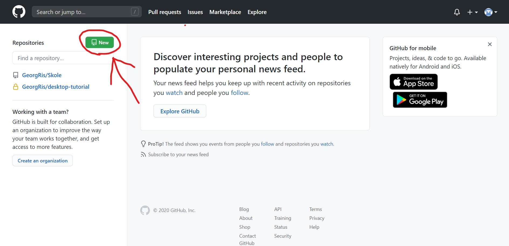
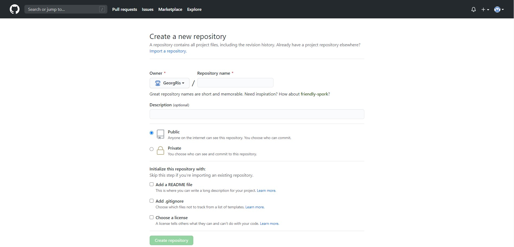
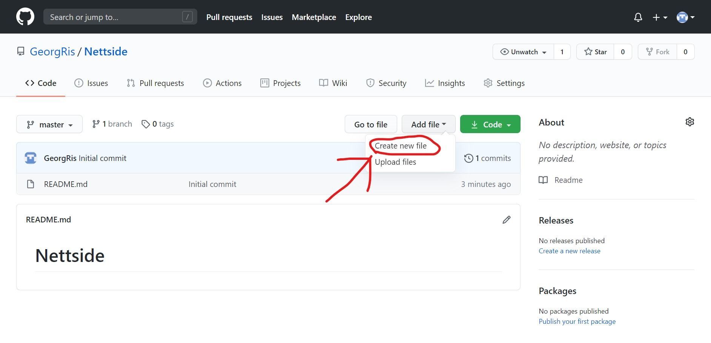
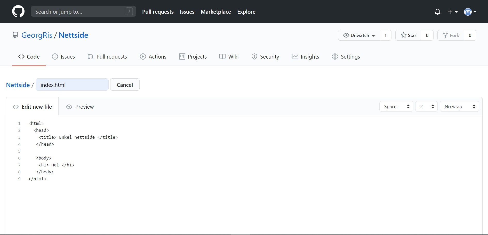
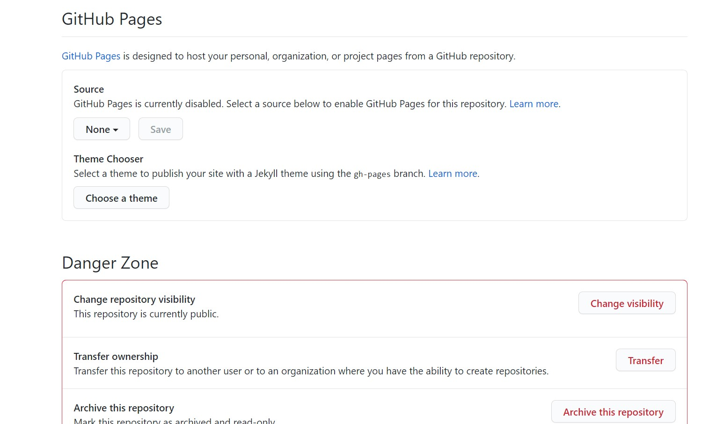

Hvordan lage din første github nettside
- Først trenger du en Github bruker, dette gjør du på www.github.com.
Når du er inne på github trykker du oppe i høyre på "Sign up".
- Så trykker du på "New" på oppe i venstre, for å lage et repository.

- Skriv det navnet du vil at repository skal hete, lag den public sånn at andre kan se repository ditt, og trykk på "Create repository".

- Etter du har laget repository. Klikker du på "Create new file" og gir filen navnet "index.html". Dette er hovedsiden til nettsiden din.

- Så skriver du koden til nettsiden. Her er et eksempel på en enkelt nettside.

- For å starte github-nettsiden må du gå på settings, også ned til "GitHub Pages" og aktivere Github pages. Når du har aktivert den vil det komme opp en link til nettsiden din.

Sånn nå har du laget din egen github-nettside, Gratulerer!